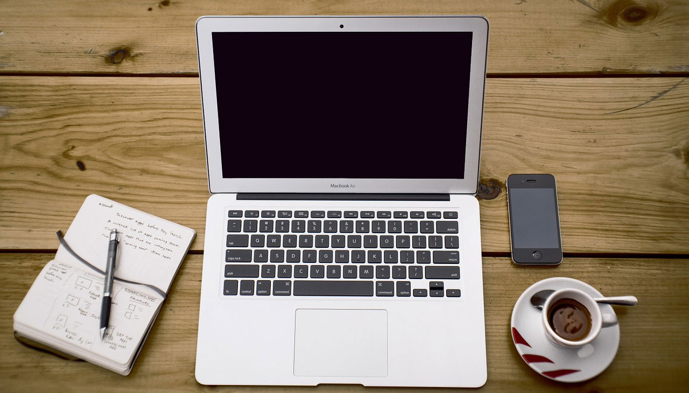
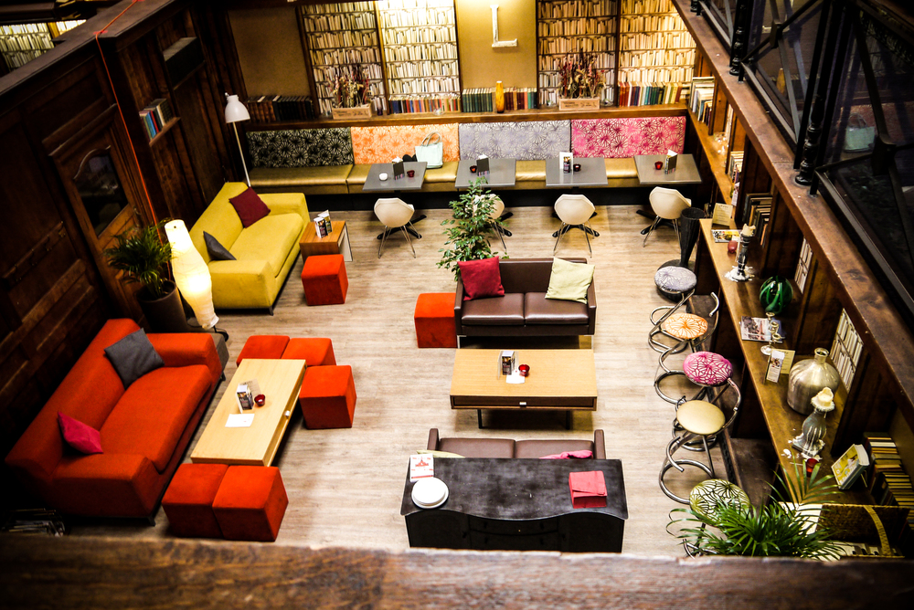

5. Treat yourself
Creating little rewards for yourself throughout the process of studying or writing a paper can help break up the monotony of a long study session and give you something to look forward to. Taking a quick walk, grabbing a smoothie, reading a favorite blog or magazine, or watching a short episode of television show are all great rewards for accomplishing a small goal. They can also reenergize you to tackle the rest of your work and boost your mood. Studies also show that a change of pace – for the time it takes to grab a cup of coffee or take a brisk walk around campus – can refresh your mind.
4. Organize
Having your study materials not only ready but also ordered and neat can make the difference to any study session. An ordered workspace and clearly organized materials can help make studying more effective and more enjoyable. Instead of searching for a missing highlighter, paging frantically through a full notebook for just the right piece of information, or running out for a pack of notecards at the last minute, you can have a smooth work session with just a bit of planning and forethought. Your organization methods don’t have to be conventional, but developing and implementing a system that works for you can make a difference between an especially stressful experience or a fulfilling one.
3. Find your space
For some people, the best place for studying is a library. Others do best in a vacant classroom, a dormitory, a common space. Some like to stay close to their work in a laboratory or remove themselves from it completely in an out-of-the way nook. The important thing is finding what works for you and studying there. Even people who can comfortably study anywhere still find that something helps take them to a mental space that is conducive to focus and creativity. Fresh-brewed tea? A specific genre of music? Exactly the right type of pencil? Whatever your study space requires, making sure you have it will help put you in the right mental state to do your best work.
2. Keep to a schedule.

It doesn’t have to be restrictive or very strict, but a schedule can help keep you disciplined and organized. This is especially important for students who work in shared laboratories or with teams. Effective time management can help keep group work and shared spaces from being nuisances and make them important tools for success. There are plenty of ways to keep track of your time and make your schedule more efficient – digital or paper calendars are excellent ways to reconcile your academic demands with your other commitments and pastimes and optimize your time.
1. Make connections
Students are often given this advice during the search for a job, but the concept is just as important in studying. Making connections between different projects and subjects can help reinforce what you are learning and enhance your understanding of different concept. Just as importantly, learning to make unconventional intellectual connections is the best way to prepare yourself to become an innovator of the future. >>>>>>> origin/master